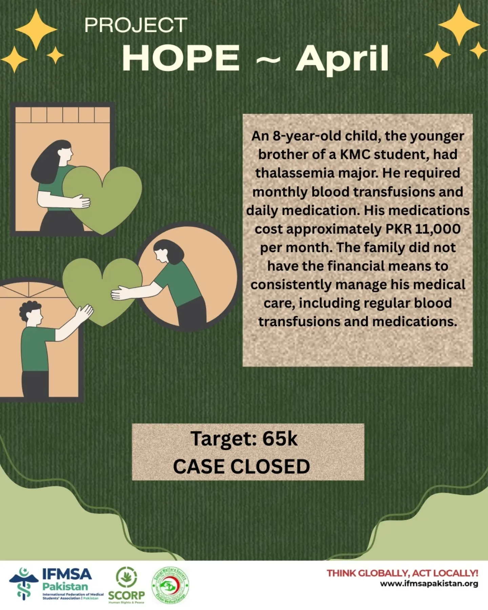

April 2026
A Child's Monthly Lifeline
An 8-year-old child, the younger brother of a KMC student, had thalassemia major. He required monthly blood transfusions and daily medication. His medications cost approximately PKR 11,000 per month. The family did not have the financial means to consistently manage his medical care, including regular blood transfusions and medications.